Saga de Pilaf - 26/02/1986
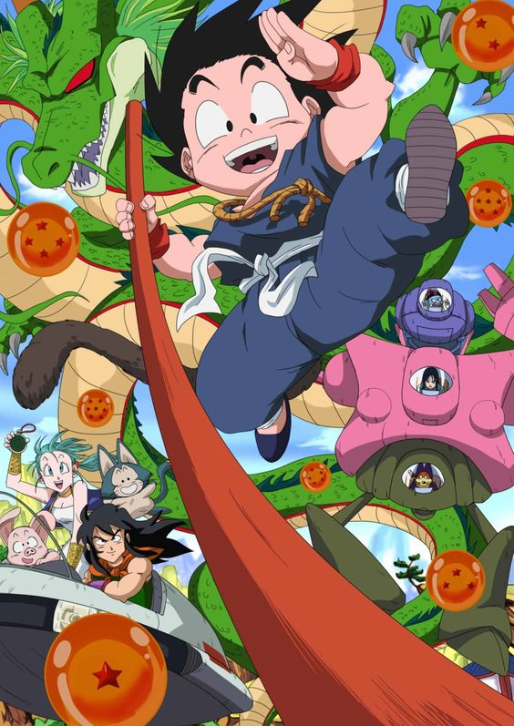La Saga del Emperador Pilaf marca el emocionante comienzo de la serie Dragon Ball. Esta saga se desarrolla con un fatídico encuentro entre una adolescente, Bulma, y un joven peculiar, Son Goku. Se cruzan en los bosques profundos, donde Goku vive una vida aislada. Intrigada por la extraordinaria fuerza de Goku y su Dragon Ball de cuatro estrellas, Bulma lo convence de embarcarse en una gran aventura en busca de las Dragon Balls restantes.
Saga Torneo N°21 de las Artes Marciales - 16/07/1986
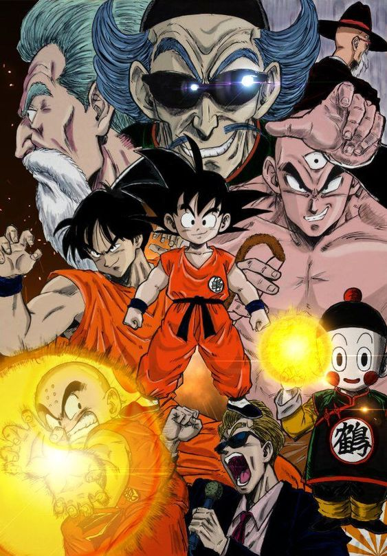El Maestro Roshi les invita a participar en la 21 edición del Torneo de Artes Marciales en el que compiten los luchadores y luchadoras más poderosos y con mejor técnica en el mundo. Para sorpresa de Goku y Krilin, allí se encuentran con Yamcha, Bulma y Puar. Primero deberían pasar una ronda de combates y después se iniciaría el gran torneo.
Saga Ejercito del Liston Rojo - 10/09/1986
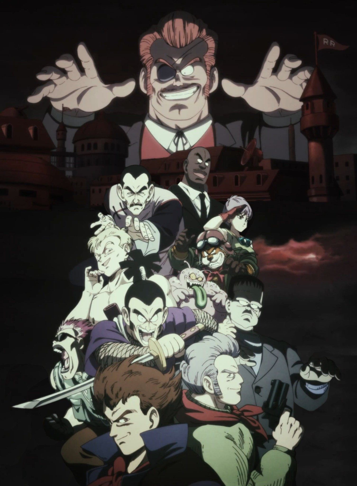Goku perdió la esfera de cuatro estrellas en su primera aventura en busca de las esferas del dragón. Y ya que era el único recuerdo que tenía de su abuelo, decide salir en su búsqueda. Para su mala suerte, un grupo de soldados del ejército del Listón Rojo interrumpen su camino, pues también buscan las esferas.
Saga El Palacio de Uranai Baba - 08/07/1987
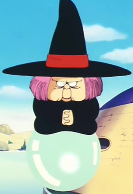Palacio De Uranai Baba es la casa de Uranai Baba y la ubicación de su negocio de la adivinación. Este palacio está situado en el margen de un gran lago, en un desierto ancho. Goku, Krilin, Yamcha, Puar y Upa viajaron aquí para pedir a Uranai Baba la ubicación de la séptima esfera del dragón.
Saga Torneo de las Artes Marciales N°22 - 25/11/1989
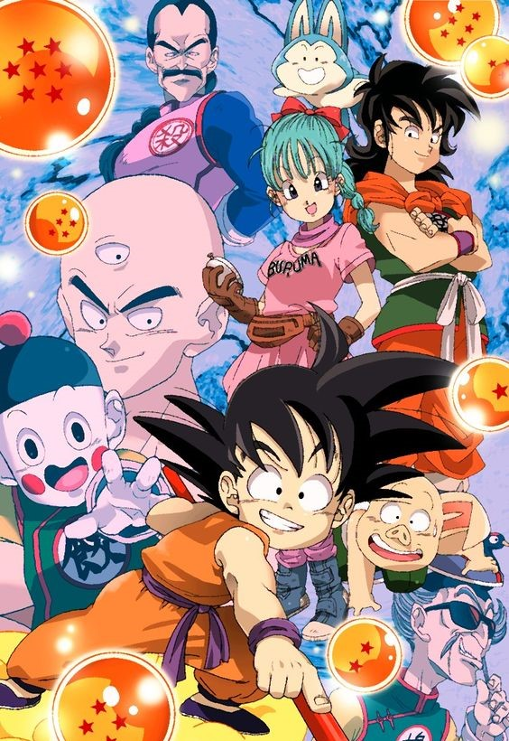Goku inicia un nuevo viaje para entrenarse y aumentar su fuerza, ya que pronto será el nuevo Torneo de Artes Marciales. Al inicio del torneo se encuentra con Krilin y Yamcha, que también han hecho algunos entrenamientos. Además, se encuentra con grandes adversarios: Tenshinhan y Chaoz, que son los discípulos del peor enemigo del Maestro Roshi (Duende Tortuga): Maestro Tsuru (Duende Grulla).
Saga Piccolo Daikuma - 27/02/1988
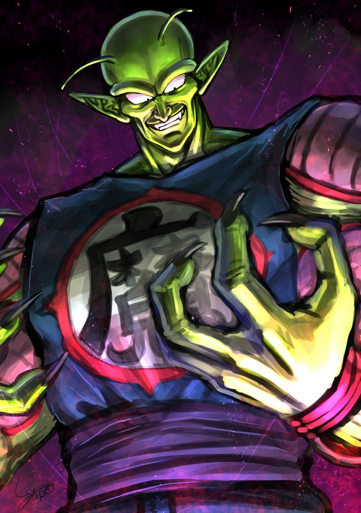Tras el difícil torneo todos se dirigieron a un restaurante. Goku se dió cuenta de que había olvidado su bastón y su esfera del dragón en el torneo y Krilin se ofreció a buscarlos. Después de un rato Krilin no había vuelto y Goku sintió que habia pasado algo. Fue al torneo y encontró a su amigo asesinado a manos de Tambourine bajo las órdenes del Gran Rey Demonio Piccolo.
Saga Torneo de las Artes Marciales N°23 - 09/11/1988
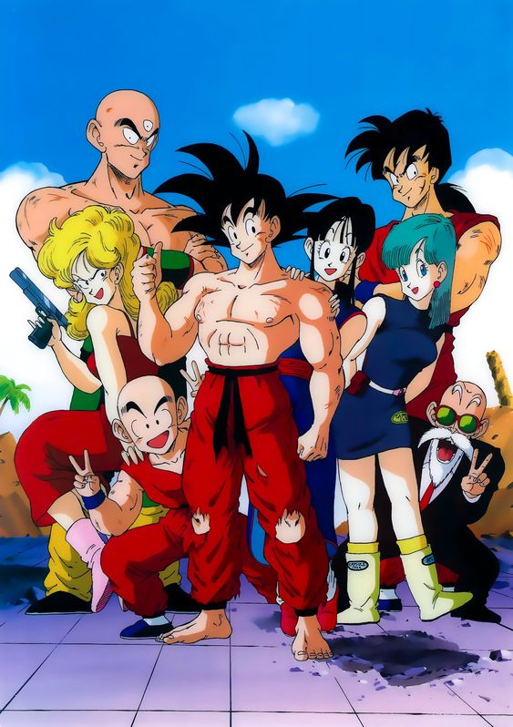Tras este gran entrenamiento, da comienzo el 23º Torneo de Artes Marciales. Allí aparece Goku con un nuevo aspecto: alto (mucho más que Krilin) y sin cola. Además, participarán Piccolo Junior, totalmente desarrollado; una chica desconocida, un hombre bastante extraño, que no parece un luchador experto y Tao Pai Pai, con parte de su cuerpo en forma de cíborg a causa de los daños que recibió en su combate contra Goku.
Saga Saiyajin - 26/04/1989
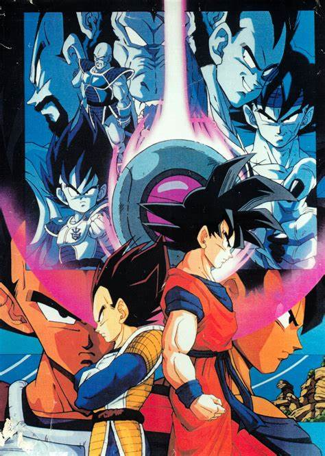Cinco años después de la pelea contra Piccolo, Goku se encuentra viviendo felizmente con Chi-Chi en la Montaña Paoz; Incluso tienen un hijo, llamado Gohan, de cuatro años. Todo parece estar en paz, hasta que un extraterrestre llega a la Tierra, preguntando por un tal Kacarrot.
Saga Freezer - 19/05/1991
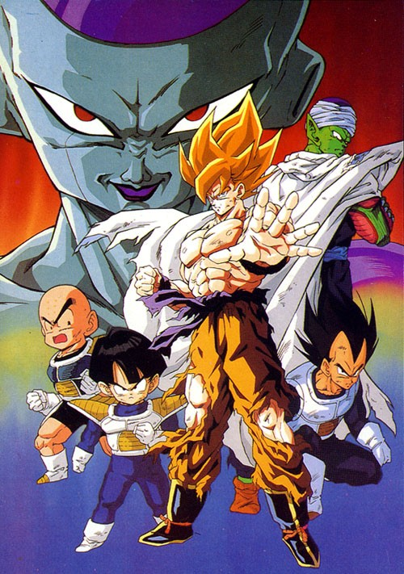El Maestro Roshi les invita a participar en la 21 edición del Torneo de Artes Marciales en el que compiten los luchadores y luchadoras más poderosos y con mejor técnica en el mundo. Para sorpresa de Goku y Krilin, allí se encuentran con Yamcha, Bulma y Puar. Primero deberían pasar una ronda de combates y después se iniciaría el gran torneo.
Saga Garlick jr. - 10/09/1986
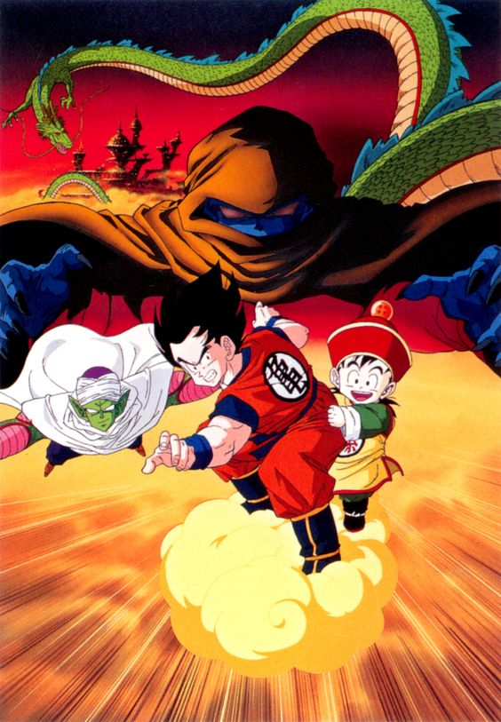Goku perdió la esfera de cuatro estrellas en su primera aventura en busca de las esferas del dragón. Y ya que era el único recuerdo que tenía de su abuelo, decide salir en su búsqueda. Para su mala suerte, un grupo de soldados del ejército del Listón Rojo interrumpen su camino, pues también buscan las esferas.
Saga Cell - 08/07/1987
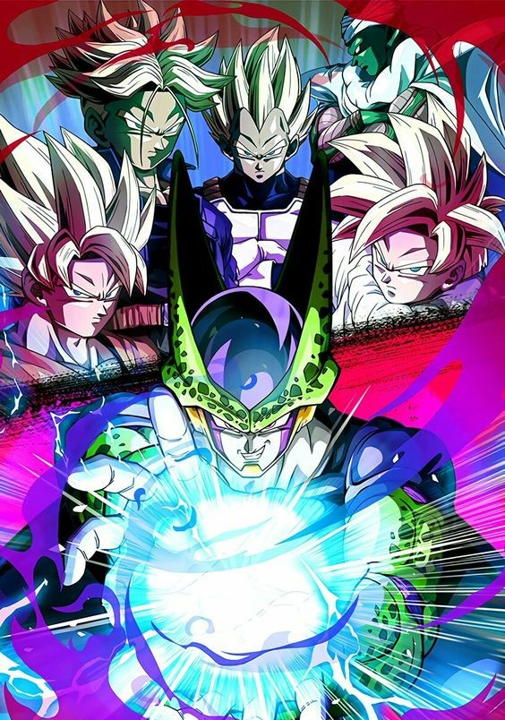Palacio De Uranai Baba es la casa de Uranai Baba y la ubicación de su negocio de la adivinación. Este palacio está situado en el margen de un gran lago, en un desierto ancho. Goku, Krilin, Yamcha, Puar y Upa viajaron aquí para pedir a Uranai Baba la ubicación de la séptima esfera del dragón.
Saga Majin Buu - 25/11/1989
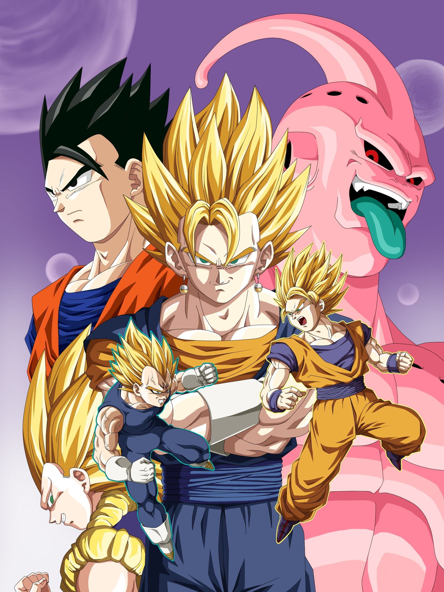Goku inicia un nuevo viaje para entrenarse y aumentar su fuerza, ya que pronto será el nuevo Torneo de Artes Marciales. Al inicio del torneo se encuentra con Krilin y Yamcha, que también han hecho algunos entrenamientos. Además, se encuentra con grandes adversarios: Tenshinhan y Chaoz, que son los discípulos del peor enemigo del Maestro Roshi (Duende Tortuga): Maestro Tsuru (Duende Grulla).
Saga Saiyajin - 26/02/1986
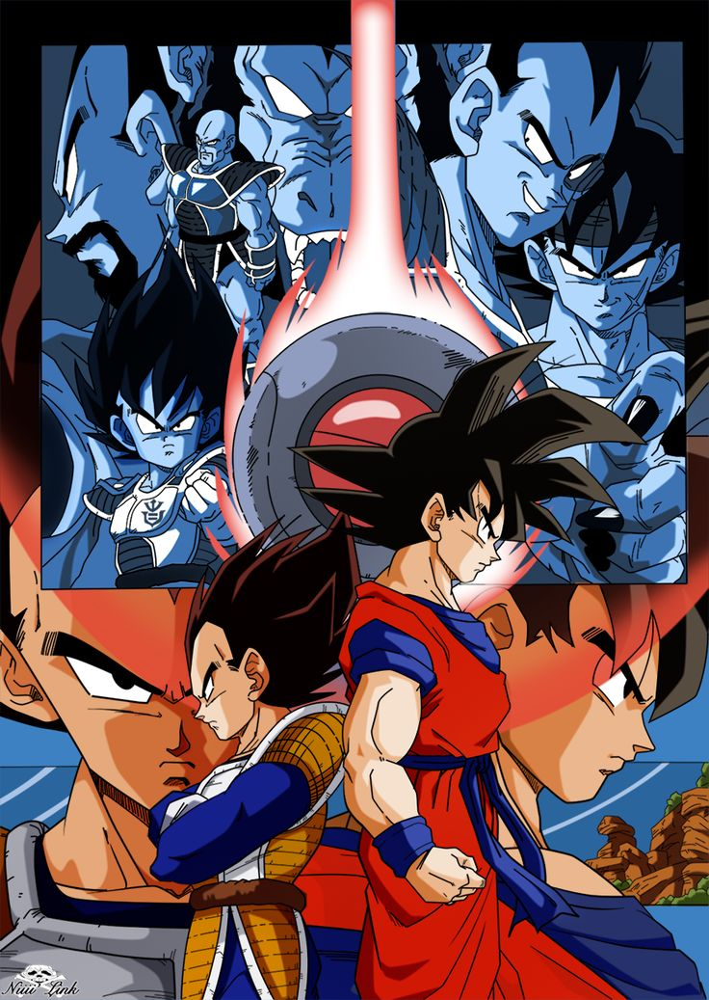La Saga del Emperador Pilaf marca el emocionante comienzo de la serie Dragon Ball. Esta saga se desarrolla con un fatídico encuentro entre una adolescente, Bulma, y un joven peculiar, Son Goku. Se cruzan en los bosques profundos, donde Goku vive una vida aislada. Intrigada por la extraordinaria fuerza de Goku y su Dragon Ball de cuatro estrellas, Bulma lo convence de embarcarse en una gran aventura en busca de las Dragon Balls restantes.
Saga Freezer - 16/07/1986
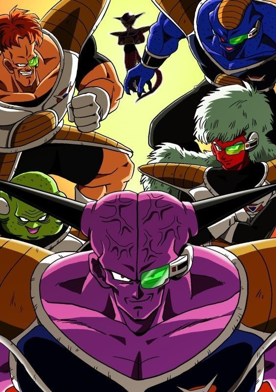El Maestro Roshi les invita a participar en la 21 edición del Torneo de Artes Marciales en el que compiten los luchadores y luchadoras más poderosos y con mejor técnica en el mundo. Para sorpresa de Goku y Krilin, allí se encuentran con Yamcha, Bulma y Puar. Primero deberían pasar una ronda de combates y después se iniciaría el gran torneo.
Saga de Cell - 10/09/1986
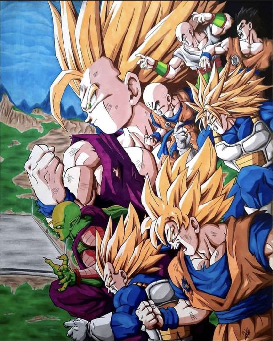Goku perdió la esfera de cuatro estrellas en su primera aventura en busca de las esferas del dragón. Y ya que era el único recuerdo que tenía de su abuelo, decide salir en su búsqueda. Para su mala suerte, un grupo de soldados del ejército del Listón Rojo interrumpen su camino, pues también buscan las esferas.
Saga Majin Buu - 08/07/1987
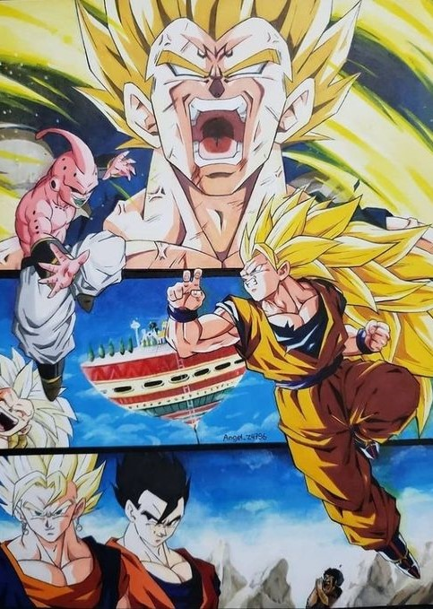Palacio De Uranai Baba es la casa de Uranai Baba y la ubicación de su negocio de la adivinación. Este palacio está situado en el margen de un gran lago, en un desierto ancho. Goku, Krilin, Yamcha, Puar y Upa viajaron aquí para pedir a Uranai Baba la ubicación de la séptima esfera del dragón.
Saga El gran Viaje - 26/02/1986
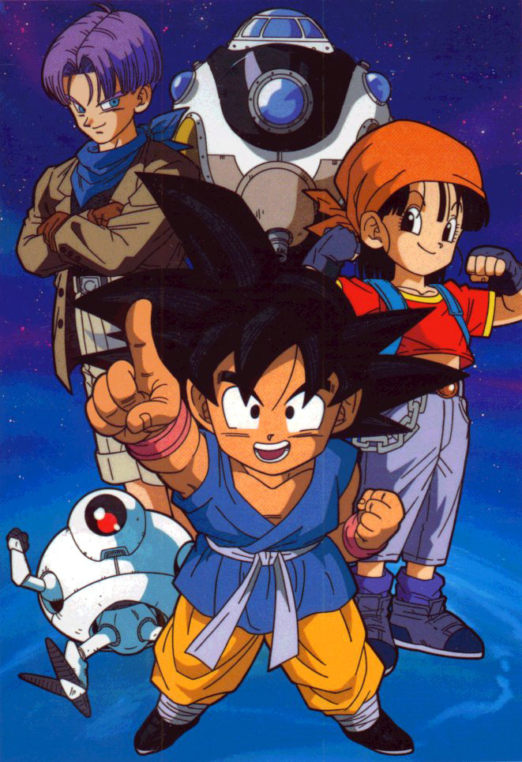La Saga del Emperador Pilaf marca el emocionante comienzo de la serie Dragon Ball. Esta saga se desarrolla con un fatídico encuentro entre una adolescente, Bulma, y un joven peculiar, Son Goku. Se cruzan en los bosques profundos, donde Goku vive una vida aislada. Intrigada por la extraordinaria fuerza de Goku y su Dragon Ball de cuatro estrellas, Bulma lo convence de embarcarse en una gran aventura en busca de las Dragon Balls restantes.
Saga Baby - 16/07/1986
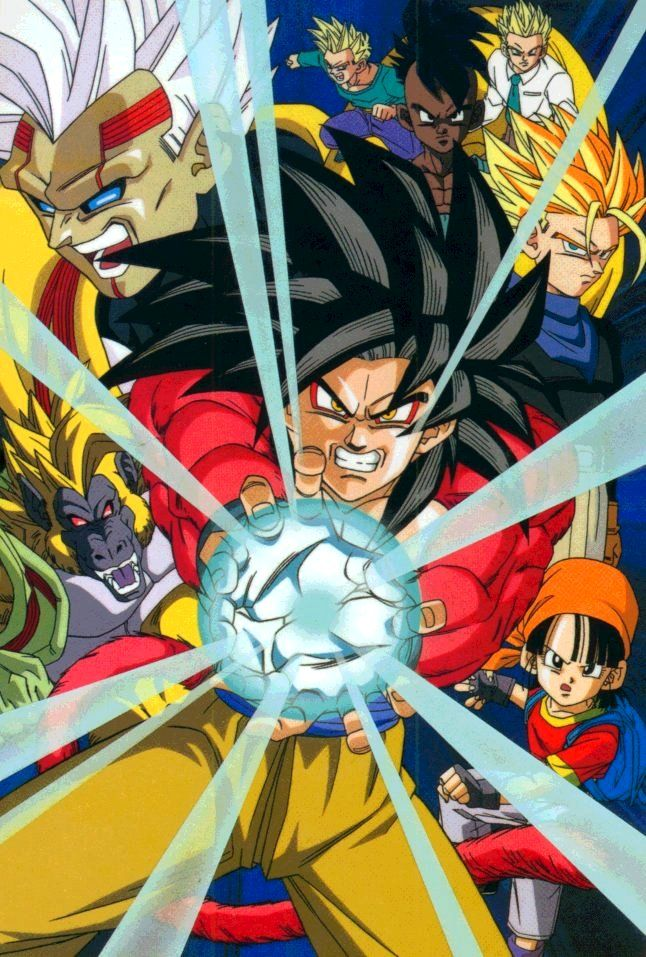El Maestro Roshi les invita a participar en la 21 edición del Torneo de Artes Marciales en el que compiten los luchadores y luchadoras más poderosos y con mejor técnica en el mundo. Para sorpresa de Goku y Krilin, allí se encuentran con Yamcha, Bulma y Puar. Primero deberían pasar una ronda de combates y después se iniciaría el gran torneo.
Saga Super Androide N°17 - 10/09/1986

Goku perdió la esfera de cuatro estrellas en su primera aventura en busca de las esferas del dragón. Y ya que era el único recuerdo que tenía de su abuelo, decide salir en su búsqueda. Para su mala suerte, un grupo de soldados del ejército del Listón Rojo interrumpen su camino, pues también buscan las esferas.
Saga Los Dragonses Oscuros - 08/07/1987
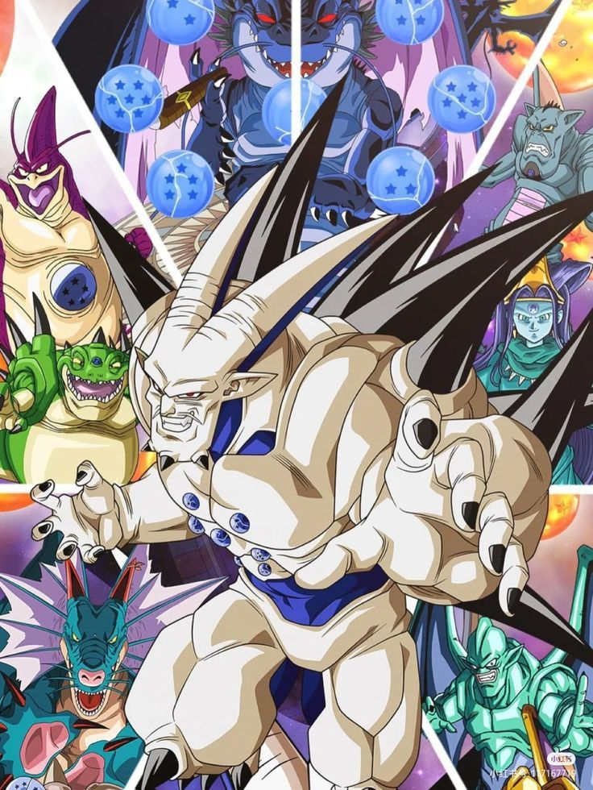Palacio De Uranai Baba es la casa de Uranai Baba y la ubicación de su negocio de la adivinación. Este palacio está situado en el margen de un gran lago, en un desierto ancho. Goku, Krilin, Yamcha, Puar y Upa viajaron aquí para pedir a Uranai Baba la ubicación de la séptima esfera del dragón.
Saga La Batalla de los Dioses - 26/02/1986
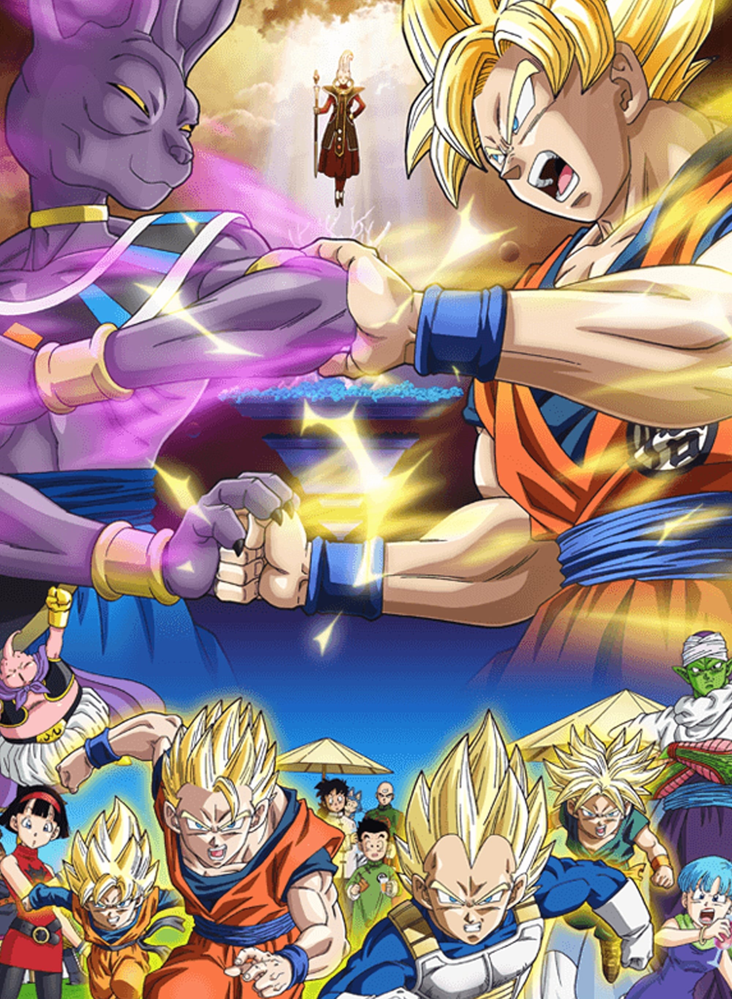La Saga del Emperador Pilaf marca el emocionante comienzo de la serie Dragon Ball. Esta saga se desarrolla con un fatídico encuentro entre una adolescente, Bulma, y un joven peculiar, Son Goku. Se cruzan en los bosques profundos, donde Goku vive una vida aislada. Intrigada por la extraordinaria fuerza de Goku y su Dragon Ball de cuatro estrellas, Bulma lo convence de embarcarse en una gran aventura en busca de las Dragon Balls restantes.
Saga La Resurrecion de Freezer - 16/07/1986
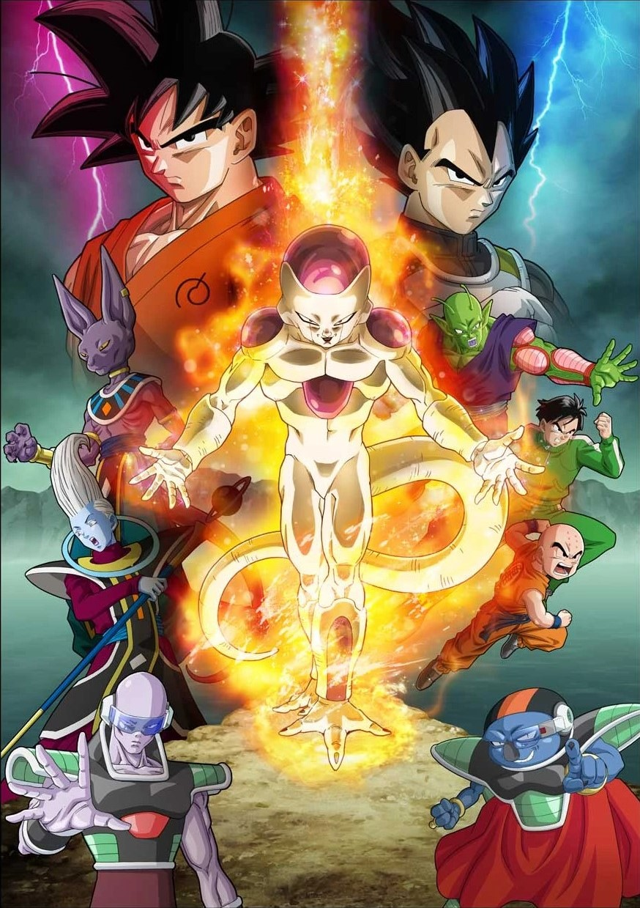El Maestro Roshi les invita a participar en la 21 edición del Torneo de Artes Marciales en el que compiten los luchadores y luchadoras más poderosos y con mejor técnica en el mundo. Para sorpresa de Goku y Krilin, allí se encuentran con Yamcha, Bulma y Puar. Primero deberían pasar una ronda de combates y después se iniciaría el gran torneo.
Saga Universo 6 & 7 - 10/09/1986

Goku perdió la esfera de cuatro estrellas en su primera aventura en busca de las esferas del dragón. Y ya que era el único recuerdo que tenía de su abuelo, decide salir en su búsqueda. Para su mala suerte, un grupo de soldados del ejército del Listón Rojo interrumpen su camino, pues también buscan las esferas.
Saga Black Goku - 08/07/1987
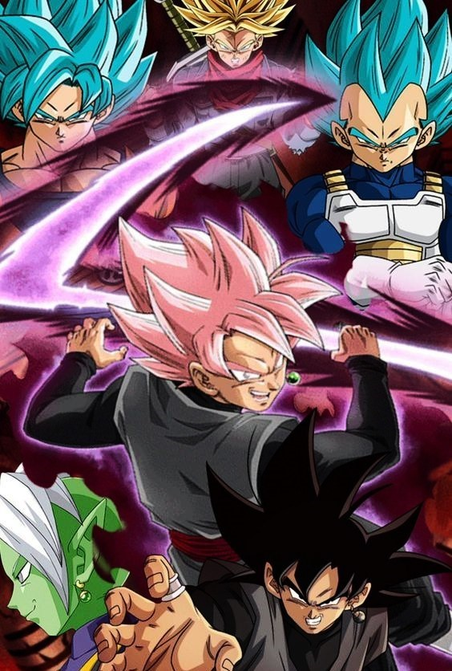Palacio De Uranai Baba es la casa de Uranai Baba y la ubicación de su negocio de la adivinación. Este palacio está situado en el margen de un gran lago, en un desierto ancho. Goku, Krilin, Yamcha, Puar y Upa viajaron aquí para pedir a Uranai Baba la ubicación de la séptima esfera del dragón.
Saga El torneo del Poder - 25/11/1989
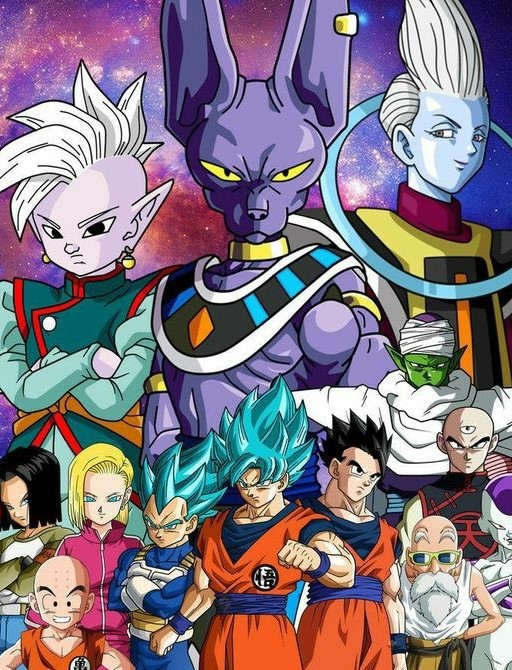Goku inicia un nuevo viaje para entrenarse y aumentar su fuerza, ya que pronto será el nuevo Torneo de Artes Marciales. Al inicio del torneo se encuentra con Krilin y Yamcha, que también han hecho algunos entrenamientos. Además, se encuentra con grandes adversarios: Tenshinhan y Chaoz, que son los discípulos del peor enemigo del Maestro Roshi (Duende Tortuga): Maestro Tsuru (Duende Grulla).